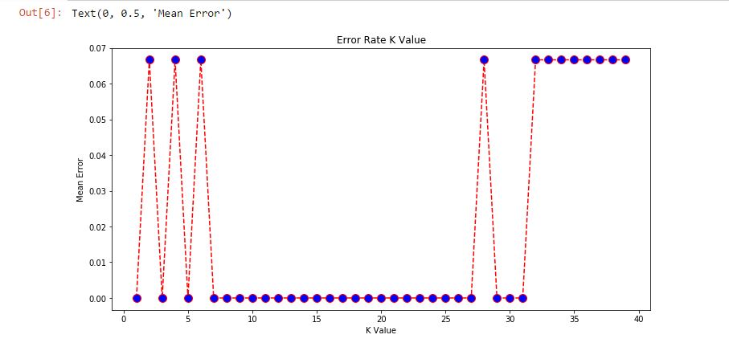

DATAMINING , Algoritma Nearest Neighbor (K-Nearest Neighbor/K-NN)¶
A. Pengertian dan Cara Kerja Algoritma K-Nearest Neighbors (KNN)¶
K-nearest neighbors atau knn adalah algoritma yang berfungsi untuk melakukan klasifikasi suatu data berdasarkan data pembelajaran (train data sets), yang diambil dari k tetangga terdekatnya (nearest neighbors). Dengan k merupakan banyaknya tetangga terdekat.

Cara Kerja Algoritma K-Nearest Neighbors (KNN)¶
K-nearest neighbors melakukan klasifikasi dengan proyeksi data pembelajaran pada ruang berdimensi banyak. Ruang ini dibagi menjadi bagian-bagian yang merepresentasikan kriteria data pembelajaran. Setiap data pembelajaran direpresentasikan menjadi titik-titik c pada ruang dimensi banyak. model k-NN bekerja dengan mengambil titik data dan melihat titik data berlabel ‘k’ terdekat. Titik data kemudian diberi label mayoritas poin terdekat ‘k’.
Banyaknya k Tetangga Terdekat¶
Untuk menggunakan algoritma k nearest neighbors, perlu ditentukan banyaknya k tetangga terdekat yang digunakan untuk melakukan klasifikasi data baru. Banyaknya k, sebaiknya merupakan angka ganjil, misalnya k = 1, 2, 3, dan seterusnya. Penentuan nilai k dipertimbangkan berdasarkan banyaknya data yang ada dan ukuran dimensi yang dibentuk oleh data. Semakin banyak data yang ada, angka k yang dipilih sebaiknya semakin rendah. Namun, semakin besar ukuran dimensi data, angka k yang dipilih sebaiknya semakin tinggi. Misalnya, jika K = 3, 2 titik merah dan 1 titik biru,maka titik data yang dimaksud akan diberi label 'merah',karena merah adalah mayoritas. dengan K = 6, 4 titik adalah 'biru' dan 2 adalah 'merah', maka titik data yang dimaksud akan diberi label 'biru', karena 'biru' adalah mayoritas (seperti yang ditunjukkan pada grafik di atas )
Algoritma K-Nearest Neighbors¶
-
Tentukan k bilangan bulat positif berdasarkan ketersediaan data pembelajaran.
-
Pilih tetangga terdekat dari data baru sebanyak k.
-
Tentukan klasifikasi paling umum pada langkah (ii), dengan menggunakan frekuensi terbanyak.
-
Keluaran klasifikasi dari data sampel baru.
B. Contoh implementasi K Nearest Neighbor¶
saya akan menggunakan set data iris yang terkenal untuk contoh KNN . Dataset terdiri dari empat atribut: sepal-width, sepal-length, petal-width dan petal-length. Ini adalah atribut dari jenis spesifik tanaman iris. Tugasnya adalah untuk memprediksi kelas tempat tanaman ini berada. Ada tiga kelas dalam dataset: Iris-setosa, Iris-versicolor dan Iris-virginica. lebih detail dan lengkapnya akan saya bahas di bawah ini
import libraries dan dataset
import numpy as np import matplotlib.pyplot as plt import pandas as pd url = "https://archive.ics.uci.edu/ml/machine-learning-databases/iris/iris.data" # Tetapkan nama colum ke dataset names = ['sepal-length', 'sepal-width', 'petal-length', 'petal-width', 'Class'] # Baca dataset ke pandas dataframe dataset = pd.read_csv(url, names=names) dataset.head()
script di atas akan menampilkan lima baris pertama dari dataset kami seperti yang ditunjukkan di bawah ini:
sepal-length sepal-width petal-length petal-width Class 0 5.1 3.5 1.4 0.2 Iris-setosa 1 4.9 3.0 1.4 0.2 Iris-setosa 2 4.7 3.2 1.3 0.2 Iris-setosa 3 4.6 3.1 1.5 0.2 Iris-setosa 4 5.0 3.6 1.4 0.2 Iris-setosa
Preprocessing
Langkah selanjutnya adalah membagi dataset kami menjadi atribut dan labelnya. Untuk melakukannya, gunakan kode berikut:
#membagi atribut(x) dan label(y) X = dataset.iloc[:, :-1].values y = dataset.iloc[:, 4].values
Variabel X berisi empat kolom pertama dari dataset (yaitu atribut) sementara y berisi label.
Membagi dataset (training dan testing)
Untuk menghindari pemasangan berlebihan, saya akan membagi dataset menjadi data latih dan data uji.
Untuk membuat pelatihan dan menguji pemisahan, jalankan skrip berikut:
#membagi data training dan data testing from sklearn.model_selection import train_test_split X_train, X_test, y_train, y_test = train_test_split(X, y, test_size=0.10)
Script di atas membagi dataset menjadi 90% data training dan 10% data uji. Ini berarti bahwa dari total 150 record, set pelatihan akan berisi 135 record dan set tes berisi 15 record tersebut.
Penskalaan fitur
Sebelum membuat prediksi aktual, itu selalu merupakan praktik yang baik untuk skala fitur sehingga semuanya dapat dievaluasi secara seragam. Wikipedia menjelaskan alasannya dengan cukup baik:
Karena rentang nilai data mentah sangat bervariasi, dalam beberapa algoritma pembelajaran mesin, fungsi objektif tidak akan berfungsi dengan baik tanpa normalisasi. Sebagai contoh, mayoritas pengklasifikasi menghitung jarak antara dua titik dengan jarak Euclidean. Jika salah satu fitur memiliki rentang nilai yang luas, jarak akan diatur oleh fitur khusus ini. Oleh karena itu, rentang semua fitur harus dinormalisasi sehingga setiap fitur berkontribusi sekitar secara proporsional terhadap jarak akhir.
Algoritma gradient descent (yang digunakan dalam pelatihan jaringan saraf dan algoritma pembelajaran mesin lainnya) juga lebih cepat berkonvergensi dengan fitur yang dinormalisasi.
Script berikut melakukan penskalaan fitur:
#penskalaan fitur from sklearn.preprocessing import StandardScaler scaler = StandardScaler() scaler.fit(X_train) X_train = scaler.transform(X_train) X_test = scaler.transform(X_test)
Training and prediction
melatih algoritma KNN dan membuat prediksi menggunakan Scikit-Learn.
#training and prediction from sklearn.neighbors import KNeighborsClassifier classifier = KNeighborsClassifier(n_neighbors=5) classifier.fit(X_train, y_train)
Langkah pertama adalah mengimpor kelas KNeighborsClassifier dari perpustakaan sklearn.neighbors . Di baris kedua, kelas ini diinisialisasi dengan satu parameter, yaitu n_neigbours. Ini pada dasarnya adalah nilai untuk K. Tidak ada nilai ideal untuk K dan dipilih setelah pengujian dan evaluasi, namun untuk memulai, k=5 tampaknya menjadi nilai yang paling umum digunakan untuk algoritma KNN. Langkah terakhir adalah membuat prediksi pada data pengujian. Untuk melakukannya, jalankan skrip berikut:
y_pred = classifier.predict(X_test)
Mengevaluasi Algoritma
Untuk mengevaluasi suatu algoritma, confusion_matrix, precision, recall dan skor f1 adalah metrik yang paling umum digunakan. Metode confusion_matrix and classification_report dari sklearn.metrics dapat digunakan untuk menghitung metrik ini. Lihatlah skrip berikut:
#mengevaluasi algoritma from sklearn.metrics import classification_report, confusion_matrix print(confusion_matrix(y_test, y_pred)) print(classification_report(y_test, y_pred))
Output dari skrip di atas terlihat seperti ini:
[[4 0 0] [0 5 0] [0 0 6]] precision recall f1-score support Iris-setosa 1.00 1.00 1.00 4 Iris-versicolor 1.00 1.00 1.00 5 Iris-virginica 1.00 1.00 1.00 6 accuracy 1.00 15 macro avg 1.00 1.00 1.00 15 weighted avg 1.00 1.00 1.00 15
Hasilnya menunjukkan bahwa algoritma KNN tersebut dapat mengklasifikasikan semua 15 record dalam set uji dengan akurasi 100%, yang sangat baik. Meskipun algoritme berkinerja sangat baik dengan dataset ini, tidak selalu hasil yang sama dengan semua aplikasi. Seperti disebutkan sebelumnya, KNN tidak selalu berkinerja baik dengan fitur berdimensi tinggi atau kategorikal.
Membandingkan Tingkat Kesalahan dengan Nilai K
Di bagian pelatihan dan prediksi, bahwa tidak ada cara untuk mengetahui sebelumnya nilai K yang menghasilkan hasil terbaik di percobaan pertama. saya secara acak memilih 5 sebagai nilai K dan kebetulan menghasilkan akurasi 100%.
Salah satu cara untuk membantu menemukan nilai K terbaik adalah dengan memplot grafik nilai K dan tingkat kesalahan yang sesuai untuk dataset.
Di bagian ini, saya akan memplot kesalahan rata-rata untuk nilai prediksi set tes untuk semua nilai K antara 1 dan 40.
Untuk melakukannya, pertama-tama mari kita menghitung rata-rata kesalahan untuk semua nilai yang diprediksi di mana K berkisar dari 1 dan 40. Jalankan skrip berikut:
error = [] # Menghitung kesalahan untuk nilai K antara 1 dan 40 for i in range(1, 40): knn = KNeighborsClassifier(n_neighbors=i) knn.fit(X_train, y_train) pred_i = knn.predict(X_test) error.append(np.mean(pred_i != y_test))
Skrip di atas mengeksekusi loop dari 1 hingga 40. Dalam setiap iterasi kesalahan rata-rata untuk nilai prediksi set tes dihitung dan hasilnya ditambahkan ke daftar kesalahan.
Langkah selanjutnya adalah memplot nilai kesalahan terhadap nilai K. Jalankan skrip berikut untuk membuat plot:
plt.figure(figsize=(12, 6)) plt.plot(range(1, 40), error, color='red', linestyle='dashed', marker='o', markerfacecolor='blue', markersize=10) plt.title('Error Rate K Value') plt.xlabel('K Value') plt.ylabel('Mean Error')
Grafik output terlihat seperti ini:
Dari output kita dapat melihat bahwa kesalahan rata-rata adalah nol ketika nilai K adalah 1,3,5 dan antara 7-27 , 29-31. Saya akan menyarankan Anda untuk bermain-main dengan nilai K untuk melihat bagaimana hal itu berdampak pada keakuratan prediksi.
referensi:
https://stackabuse.com/k-nearest-neighbors-algorithm-in-python-and-scikit-learn/
Sekian, terimakasih, semoga bermanfaat